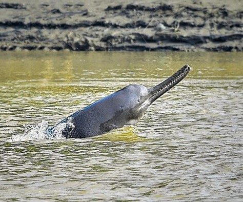

सोंसGanges River Dolphin
Platanista gangetica · Platanistidae · MAM-0022

- Scientific name वैज्ञानिक नाम
- Platanista gangetica Lebeck, 1801
- Family कुल
- Platanistidae
- Hindi हिंदी
- सोंस
- Local names स्थानीय नाम
- sons, soons, susu, sonsh, suns
- Status here यहाँ की स्थिति
- native
- Movement आवागमन
- Resident, here all year
- IUCN IUCN
- EN
- Review समीक्षा
- audited and independently read
When to look कब देखें
Present all year. साल भर मौजूद।
Uses and possibilities उपयोग और संभावनाएँ
Drawn from the documented uses in the profile below, where each is labelled traditional, current or a research lead. All uses →
सोंस / Ganges River Dolphin
Platanista gangetica Lebeck, 1801 — Platanistidae
सोंस (गंगा की डॉलफिन) — भारत का सबसे दुर्लभ और सबसे संरक्षित जलीय स्तनधारी। यह केवल घाघरा और राप्ती नदियों में पाया जाता है, जो बस्ती और अयोध्या जिलों की सीमा बनाती हैं। इसके अलावा और कहीं नहीं। प्राचीन काल में गंगा नदी में बहुत था, पर अब लगभग विलुप्त हो गया है। छोटी, पीछे की ओर झुकी हुई पँखुड़ी जैसी पंखुड़ी (पृष्ठीय फिन) के साथ। आँखें बहुत छोटी या लगभग अंधा। नदी में तेज़ आवाज़ों से दिशा-ज्ञान करता है। भारतीय वन्यजीव संरक्षण अधिनियम 1972 की अनुसूची I में पूरी तरह सुरक्षित। घाघरा सर्वेक्षण में सबसे नज़दीकी ज्ञात रिकॉर्ड है।
Quick Identification त्वरित पहचान
| Feature | Description |
|---|---|
| Size | 1.5–2.5 m; freshwater cetacean |
| Body | Plump, cylindrical; no distinct neck |
| Dorsal fin | Small and slanted backward (distinctive); not tall |
| Eyes | Extremely small, vestigial; essentially blind |
| Snout | Long, slender, slightly upturned at tip |
| Colour | Grey-brown, lighter on belly |
| Behaviour | Solitary or in pairs; comes up to breathe every 30–60 seconds; makes buzzing echolocation clicks |
| Range | ONLY in Ghaghra and Rapti river systems bordering Basti and Ayodhya districts |
Field tip: In the Ghaghra or Rapti rivers, a small grey-brown river mammal with a small slanted dorsal fin, small eyes, long snout, and that surfaces frequently is a Ganges Dolphin. Extremely rare and requires expertise to spot. Listen for clicking echolocation sounds.
हिंदी — कैसे पहचानें: केवल घाघरा और राप्ती में। छोटी डॉलफिन, लंबी नाक, पीछे की ओर झुकी पंखुड़ी, बहुत छोटी आँखें। तेज़ क्लिकिंग आवाज़ें करता है।
Morphology आकारिकी
Biometrics (typical measurements for Indian populations):
| Measurement | Range |
|---|---|
| Body length | 1.5–2.5 m (females smaller) |
| Weight | 70–150 kg |
| Dorsal fin height | 20–30 cm (slanted backward) |
Body: Plump and cylindrical, with no distinct neck. The body is adapted entirely for aquatic life; the posterior limbs are fused into a tail flukes.
Head: The snout is long and slender, slightly upturned at the tip. The snout is highly sensitive and is used to probe the river bottom for prey.
Eyes: Extremely small and vestigial; the dolphin is effectively blind. It relies entirely on echolocation (echolalia and click-based navigation).
Dorsal fin: Small (20–30 cm) and slanted backward—a distinctive character. The fin is not tall and may be partly obscured by waves.
Colour: Grey-brown dorsally; lighter (cream or pale grey) on the belly.
Flippers: Pectoral flippers are small and paddle-like.
Flukes: The caudal flukes (tail fins) are horizontally oriented.
Behaviour & Ecology व्यवहार और पारिस्थितिकता
An obligate freshwater cetacean, entirely dependent on river flow and water quality. It is solitary or found in pairs, with some grouping in deep pools.
Breathing: Surfaces every 30–60 seconds to breathe; the breathing blow is audible and visible.
Echolocation: Uses ultrasonic clicks (produced by structures in the nasal passages) to navigate murky river water and locate prey. The clicking is audible to humans as a buzzing or whirring sound.
Feeding: Hunts fish, particularly catfish and carp, using echolocation to locate prey in turbid water. It feeds at all depths and times of day.
Reproduction: Breeding is year-round with no clear seasonality; females produce a single calf after a long gestation (8–9 months).
Lifespan: Long-lived; individuals may survive 25+ years in the wild.
Life Cycle / Phenology जीवन चक्र
| Stage / Event | Timing |
|---|---|
| Sexual maturity | 6–7 years |
| Breeding | Year-round; calves born in all seasons |
| Gestation | 8–9 months |
| Calf dependency | 1–2 years; weaned and independent |
| Lifespan | 25–30 years (estimated) |
Host Plants or Prey आहार
- Fish: catfish, carp, and other freshwater species
- Crustaceans (occasionally)
Predators / Natural Enemies शत्रु
Adults: No natural predators in the river system.
Calves: Crocodiles (if present); very rare predation.
Human threats: Bycatch in fishing nets (the primary cause of mortality); river pollution and habitat degradation; dam and barrage construction fragmenting populations.
Agricultural / Human Relevance कृषि प्रासंगिकता
Conservation status: Endangered. Classified as Endangered by the IUCN. Protected under Schedule I of the Wildlife (Protection) Act, 1972, retained in Schedule I by the 2022 amendment (the highest protection level in India).
Historical decline: Once found throughout the Ganges–Brahmaputra–Meghna river system; now restricted to fragmented populations in a few rivers, with the Ghaghra population among the smallest and most threatened.
Threats:
- Fishing nets: bycatch is the primary cause of death.
- River damming and barrages: fragment populations and prevent migration.
- Water pollution: chemical and agricultural runoff; industrial discharge.
- Habitat degradation: sand mining, reduced water flow.
- Climate change: altered river hydrology.
Conservation efforts: The species is protected by Indian law; the Ghaghra population is monitored by biologists. Fishing restrictions in critical habitat and captive breeding programs (attempted in the past, ongoing) are conservation strategies.
Cultural significance: The dolphin is sacred in Hindu tradition and is symbolized in the river mythology. The species name gangetica refers to the Ganges (Ganga, the river goddess).
Today: Published counts for the Ghaghra are small and scattered, and no district-level number exists; the species is listed as Endangered by the IUCN. The nearest published record is from the Ghaghra surveys and the dedicated Ganges Dolphin Conservation Centre at Patna (for the Ganges population in Bihar, which is more abundant but still critically endangered). The species is one of India's rarest mammals and a conservation priority.
Expected Locally स्थानीय रूप से अपेक्षित
Not a field record. Written from published accounts for eastern Uttar Pradesh. No confirmed local sighting yet — if you have seen it, that is what the atlas needs.
अभी तक स्थानीय पुष्टि नहीं। यह विवरण प्रकाशित स्रोतों से है, किसी अवलोकन से नहीं।
Range-restricted: The Ganges River Dolphin is expected only in the Ghaghra and Rapti river systems that border Basti and Ayodhya districts. It does not occur in small streams, canals, or areas away from the main river channels. Outside of these river systems, the species should not be expected. The nearest published records are from the Ghaghra surveys; the Ganges population in Bihar and the Brahmaputra population in Assam are better-known but remain critically endangered. A sighting in the Ghaghra would be a significant conservation record.
Distribution वितरण
Global range: Historically throughout the Ganges–Brahmaputra–Meghna river system in India, Nepal, and Bangladesh. Now fragmented into isolated populations.
In India: Ganges river (Bihar); Brahmaputra river (Assam); Ghaghra river (Uttar Pradesh—the most isolated population).
In Uttar Pradesh: Restricted to the Ghaghra river; occasionally documented in the Rapti.
In Basti district / eastern UP: Expected only in the Ghaghra and possibly Rapti river systems that form district borders. Extremely rare and localized.
Research Questions शोध प्रश्न
Anyone can investigate these | कोई भी इन प्रश्नों की जाँच कर सकता है
- How many Ganges dolphins remain in the Ghaghra today? / घाघरा में कितने सोंस बचे हैं? — A systematic survey with trained biologists.
- What is the main cause of death in the Ghaghra population: bycatch, habitat loss, or pollution? — Autopsy of found carcasses (if any).
- Where are the critical deep pools where dolphins concentrate? — Survey river from boat; note sightings.
- What fish species do dolphins feed on in the Ghaghra? — Analyze stomach contents (from carcasses) or river fish surveys.
- Can fishing restrictions in critical habitat reduce bycatch? — Coordinate with fishermen; monitor outcomes.
Similar Species मिलती-जुलती प्रजातियाँ
| Species | How to tell apart | हिंदी | |
|---|---|---|---|
| [[gharial\ | gharial]] (Gavialis gangeticus) | Much larger, crocodilian (reptile), multiple teeth visible, rough scaled skin | मगरमच्छ जैसी, बहुत बड़ी नाक, दाँत |
| Mugger crocodile | Much larger, reptilian, different dorsal profile | मगर: बहुत बड़ा, रेप्टाइल | |
| Otter (if present) | Much smaller (1 m), different body shape, no dorsal fin, different snout | ऊदबिलाव: छोटा, अलग आकार |
Field rule: A small grey river mammal in the Ghaghra with a small slanted dorsal fin, long snout, tiny eyes, and clicking echolocation sounds is a Ganges River Dolphin and is extremely rare and protected.
Taxonomy & Classification वर्गीकरण
Original description. Described by Lebeck in 1801. The epithet gangetica refers to the Ganges river and the Ganges goddess.
Subspecies: Platanista gangetica gangetica (the Ganges population, now mostly extinct in the Ganges proper due to damming); P. g. minor (the Brahmaputra population in Assam). The Ghaghra population is uncertain in subspecific assignment but is likely associated with the gangetica form.
Family and order placement: Platanistidae, the family of river dolphins unique to South Asia; order Cetacea, class Mammalia. The Platanistidae is one of the most ancient cetacean families.
Phylogenetic notes: Platanista is the only living genus in its family. River dolphins (of which there are three families worldwide: Platanistidae in South Asia, Iniidae in the Amazon, and Pontoporiidae in South America) are among the most basal cetaceans.
IUCN status rationale: Endangered. The population has declined steeply over the last century due to habitat loss, damming and bycatch; the IUCN lists it as Endangered. The species has one of the lowest populations of any Asian mammal.
Photo Gallery फोटो गैलरी
Photos needed आवश्यक फोटो
- [ ] Dolphin surfacing with dorsal fin visible (सतह पर आता डॉलफिन)
- [ ] Snout and small eye detail (लंबी नाक, छोटी आँख)
- [ ] Group (if observable) in a pool (गहरे पूल में)
No photos yet — add field photos to media/species/ganges_river_dolphin/ and run node scripts/sync_photos.js.
Atlas Connections संबंधित प्रजातियाँ
- gharial — shares the same river habitat
- Mugger — also a river predator in the same system
- ghaghra river — the critical habitat for this population
- river fish — primary prey
References संदर्भ
- Lebeck, J. (1801). Observations on the genus Delphinus and the species gangeticus. Memoirs of the Wernerian Natural History Society, 1, 559–569. [original description]
- Slijper, E.J. (1958). Whales. Basic Books, New York.
- Reeves, R.R. & Leatherwood, S. (1994). Dolphins, porpoises, and whales of the Indian subcontinent: a status assessment. IUCN Species Survival Commission. SSC Cetacean Specialist Group.
- Braulik, G.T., Arjan, D., Smith, B.D., Suryanto, Dimmick, A. & Kreb, D. (2015). Platanista gangetica. The IUCN Red List of Threatened Species 2015: e.T18567A50365151.
- Smith, B.D., Ahmed, B. & Mansur, R. (2010). A pilot survey for the Ganges river dolphin (Platanista gangetica). Marine Mammal Science, 26(3), 741–751.
- GBIF Occurrence Data — Platanista gangetica, India (2026).
Source file: species/fauna/mammals/ganges_river_dolphin.md